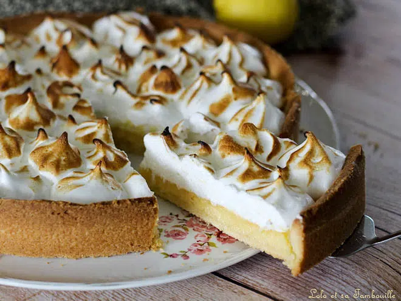

Tarte au citron

Descrition
La tarte au citron meringuée est une tarte au citron complétée par une meringue.
C'est une tarte sucrée garnie de crème à base de citron réalisée à partir d'un mélange d'œufs, de sucre, de jus de citron et de zeste de citron.
Ingredients pour 6 personnes
Pâte sablée
- 70g de sucre
- 125g de beurre
- 250g de farine
- 2 jaunes d'oeuf
- 5cl d'eau
- une pincée de sel
Crème au citron
- 4 citrons de taille moyenne
- 120g de sucre
- 3 oeufs
- une cuillère à soupe de maïzena
Meringue
- 2 blancs d'oeuf
- 100g de sucre
Préparation
- Réaliser la pâte sablée: On sépare les blancs des jaunes d'oeufs.
- Fouetter les jaunes d'oeuf avec le sucre etl'eau jusqu'à ce que ça mousse.
- Mélanger la farine et le beurre coupé en petits cubes pour obtenir une consistance sableuse (il faut faire vite pour que le mélange ne ramollisse pas trop).
- Incorporer rapidement au couteau les jaunes d'oeuf dans ce "sable".
- Former une boule avec les paumes et l'écraser 1 ou 2 fois pour rendre la boule plus homogène.
- Foncer un moule de 25 cm de diamètre avec la pâte sablée, puis la recouvrir de papier sulfurisé et de noyaux de cuisson(ou alternatives) et enfin enfourner à 180°C pour 20/25min.
- Réaliser la crème au citron: Laver les citrons et en râper deux afin de récupérer le zeste.
- Mettre les zestes dans une casserole avec le jus des citrons, le sucre et la Maïzena.
- Remuer et commencer à faire chauffer à feux doux.
- Battre les oeufs dans un récipient séparé puis incorporer tout en remuant le jus de citron, le sucre, la Maïzena et les zestes.
- Mettre à feu vif et continuer à remuer à l'aide d'un fouet jusqu'à épaississement du mélange(Veiller à toujours remuer lorsque les oeufs sont ajoutés car la crème de citron pourrait brûler).
- Ôter du feu et verser l'appareil sur le fond de tarte cuit.
- laisser refroidir.
- Réaliser la meringue: Fouetter les blancs en neige, lorsqu'ils deviennent fermes, rajoutez le sucre et fouettez encore quelques secondes.
- Garnir le dessus de la tarte avec une poche à douille
- Faire dorer la meringue au grill oû au chalumeau(attention à ne pas la faire brûlée).
Home